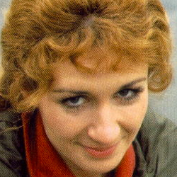

|
|
Elizabeth "Liz" Shaw is a fictional character played by Caroline John in the long-running British science fiction television seriesDoctor Who and its spin-offs. A civilian member of UNIT - United Nations Intelligence Taskforce (later retitled: UNified IntelligenceTaskforce), an international organisation that defends the Earth from alien threats, she was the companion of the Third Doctor for the 1970 season. Liz appeared in 4 stories (25 episodes).
Liz Shaw first appears in the first serial of the seventh season (1970), Spearhead from Space, having been drafted from theUniversity of Cambridge by Brigadier Lethbridge-Stewart as a scientific advisor to UNIT. She is an accomplished scientist, an expert on meteorites with degrees in medicine, physics and a dozen other subjects. Her extensive training, however, is still pale in comparison to the Doctor's own knowledge of the universe and scientific principles far beyond those of Earth. Sceptical at first of UNIT's ambit to defend against alien invasion, Shaw changes her mind when she encounters the newly regenerated Doctor and becomes involved in defeating the plans of the Nestene Consciousness and its animated plastic Autons.
|